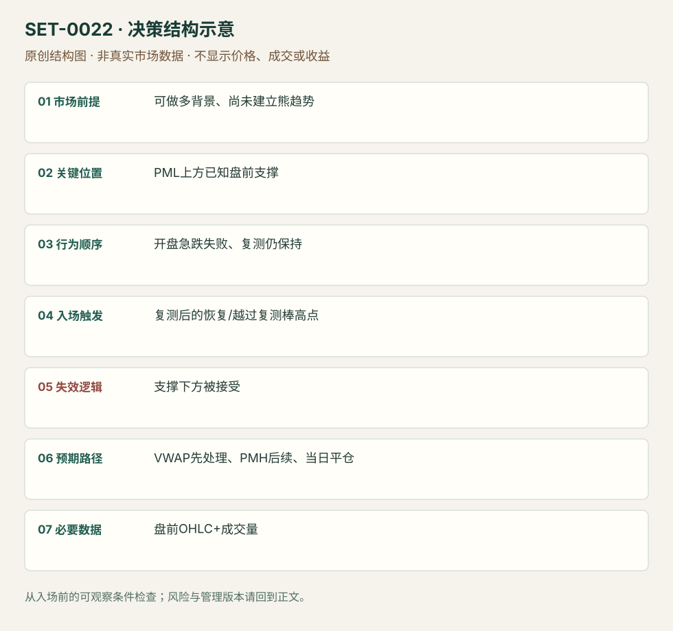

开盘洗盘后守住盘前支撑
Opening Washout Support Buy · SET-0022 · reviewed · v1.0.0
盈利证据：not_established。审查范围与来源版本见第13节；未知字段保留缺失原因。
1. 名称与快速概览
原本仍有做多背景的股票，开盘先急跌，在盘前低点上方的支撑区失败，再测试仍能守住时做多。不能把已连续建立 lower highs/lows 的熊趋势都叫洗盘。
记录口径：PA core；必要数据 OHLC、volume、premarket。名称性质：编辑性描述名，英文保留来源术语以便检索。reviewed 只表示本条规则与证据记录审查通过，盈利状态为 not_established。
2. 本质与行为假说
两次对同一支撑的测试提供短线卖盘未能维持更低价格的证据；“庄家洗盘”是来源解释，参与者动机无法从影线验证。关键是先有支撑和有效恢复。
3. 适用市场与环境
偏有催化、盘前背景不坏而开盘出现急红棒的个股。若跌破盘前低点并继续下移价值，或市场整体同向急跌，应放弃原多头背景。
来源实用市场：美国个股。
Session：美股/ES现金参考段 09:30–16:00 America/New_York；收盘前平仓。期货夜盘单独建背景，不将其并入开盘区间。
跨市场：本版不主张已经验证的跨市场迁移；更换市场必须重定数据来源、流动性与session。
4. 出现前的观察清单
提前画盘前低点及其上方已成立支撑，标当日开盘线、VWAP和PMH；比较开盘抛压与之后恢复量。支撑不能由事后看到的最低点临时发明。
5. 形成过程与状态转换
开盘卖出 → 已知支撑处下影和恢复 → 第二次回测支撑仍守 → 向上恢复信号 → 先逼近VWAP。第二次明确跌破则结构失效。
6. Entry trigger 与执行方式
来源要求看到支撑被测试并保持；可在复测后强恢复棒高点触发，本库把“强恢复”落实为收回测试区且向上穿越复测棒高点的编辑执行版。未等复测的影线抢入属于更早且不同风险版本。
7. Invalidation 与止损逻辑
SAI 是强跌破支撑或1分钟收盘跌破；缓冲和硬灾难止损必须另设并记录，不能将收盘检查当保证价格。支撑被接受在下方，原来的失败卖出假说撤销。
8. Exit、target 与 trade management
先看 VWAP，再看 PMH/更高参考；到 VWAP 无法恢复时缩减或退出。结构恢复并不保证全天上行。现金收盘前结束。
9. 常见 variations
只碰盘前低点、盘前低点上方支撑或当日已知支撑，是位置版本；无复测的 V 字入场须标早入。不得以支撑名称不同拆分多个洗盘条目。
10. 失败方式与不交易条件
根本没有先验支撑；第二次测试成交更强而压低价格；处于已建立下跌趋势；支撑至VWAP空间太小；把每次开盘下跌都解释为有意清扫。
11. 与相近 setups 的区别
12. 图表与案例解读
已看第19页 SPCE 示例，支撑在盘前低点上方，开盘急跌后留下下影并回测。此图支持形态识别，没有展示所有失败样本或可核对的逐笔成交。
- [VIS-000023] 来源PDF第19页图表；定位：PDF页序 19。SPCE 支撑测试后反弹，黄色支撑与盘前低点提供预先参考。 验证：chart_viewed_pdf_page。
本地原创示意（VIS-000079，非真实市场数据）：

小屏阅读可打开原尺寸示意图并缩放。

此图用于对照识别顺序与风险定义；不计入真实案例覆盖率。
视觉材料元数据与查看范围
- VIS-000023 · real_source_chart / structure_and_trigger / chart_viewed_pdf_page
品种：SPCE；日期：未知/不适用；周期：5分钟/1分钟；时区：未知/不适用
日期未在画面中核对；时区未在画面中核对；作者示例；不是独立成交审计 - VIS-000079 · synthetic_structure_diagram / illustration_only / generated_not_market_evidence
品种：未知/不适用；日期：未知/不适用；周期：未知/不适用；时区：未知/不适用
无真实品种、日期或价格：这是结构示意
13. 证据、分歧与未知项
完整开盘规则主要来自 SAI，Grimes 只佐证一般失败测试结构，独立核心佐证仍有限。来源对 market makers 动机的断言未被采用为规则。
- [EVD-000040] SAI Trades，《My Experience: Trading the Open Playbook》，SRC-0013；定位：PDF页序19 Opening Washout Long。支持：开盘红棒向下洗出，但在盘前低点上方支撑留下影，复测不再失守后做多；先看VWAP/盘前高。
- [EVD-000041] Adam Grimes，《Market Pattern: The Failure Test》，SRC-0018；定位：Failure test trading patterns: failure means return into earlier structure。支持：独立结构解释支持穿出后恢复才有失败信息；未直接验证开盘洗盘的选股规则。
审查边界：来源份数与独立核心核验分开；当前类别为 independent_context_only。正文中的概念、官方事实、衍生解说或同族资料只按其支持范围使用。
14. 可用于复盘的检查表
- ☐ 下单前的前提可核对：可做多背景、尚未建立熊趋势
- ☐ 事前标记位置：PML上方已知盘前支撑
- ☐ 行为按顺序出现：开盘急跌失败、复测仍保持
- ☐ 实际触发符合选定版本：复测后的恢复/越过复测棒高点
- ☐ 事先写明本次否定条件：支撑下方被接受
- ☐ 目标/路径只用当时已知信息：VWAP先处理、PMH后续、当日平仓
- ☐ 数据满足 盘前OHLC+成交量；记录时间、点差、滑点、队列和未成交
- ☐ 记录截止平仓及规则偏离；正常亏损不事后改成“未成立”
15. 后续验证问题
等复测与首次影线进入的漏单/亏损比例？低成交量反弹是否有效？开盘市场同向压力怎样影响样本？
双向相关导航
- SET-0023 弱开盘跌势的 VWAP 收复 0023 的决定触发是重新站上当日VWAP；本条可在仍低于VWAP的支撑复测处进入。
- SET-0018 平衡区间边缘的第二次反向信号 0018 在已确认平衡边缘等第二信号；本条处理现金开盘突发洗盘并依赖盘前背景。